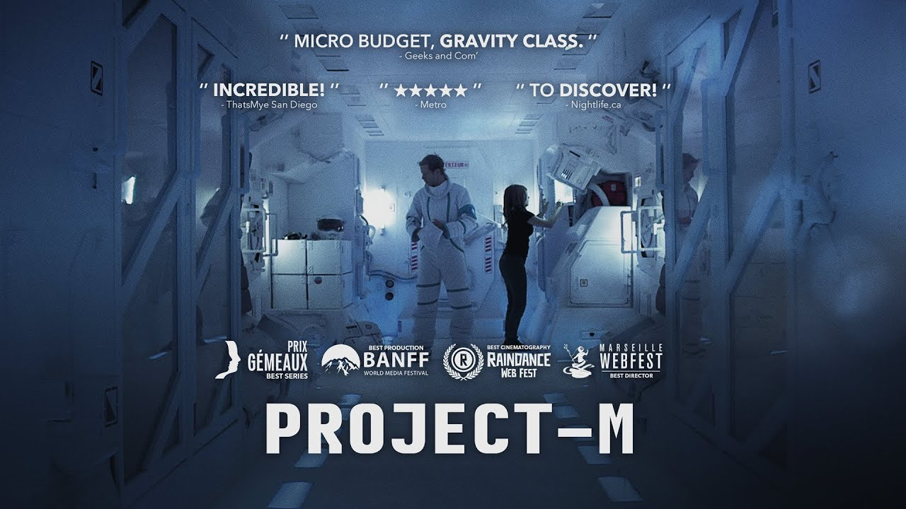

Dans un futur proche où le climat change rapidement et dans lequel les ressources se font de plus en plus rares, l'Agence Spatiale du Québec recrute des astronautes pour la mission Projet-M. Le but est de prouver la faisabilité d'un voyage de longue durée vers Europe, une lune de Jupiter. Afin de reproduire les conditions, quatre personnes sont envoyées à bord d'une station spatiale pendant 1000 jours. Produite par Babel Films.